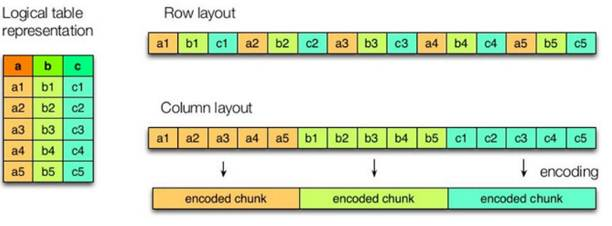
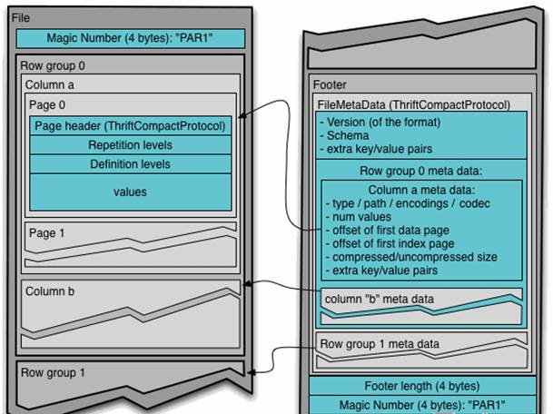
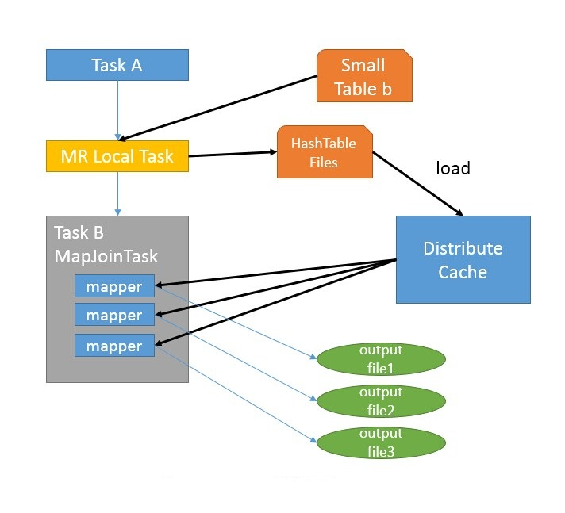

1. hive表的文件存储格式
Hive支持的存储数的格式主要有；TEXTFILE（行式存储） 、SEQUENCEFILE(行式存储)、ORC（列式存储）、PARQUET（列式存储）。
1、列式存储和行式存储

上图左边为逻辑表，右边第一个为行式存储，第二个为列式存储。
行存储的特点： 查询满足条件的一整行数据的时候，列存储则需要去每个聚集的字段找到对应的每个列的值，行存储只需要找到其中一个值，其余的值都在相邻地方，所以此时行存储查询的速度更快。select *
列存储的特点： 因为每个字段的数据聚集存储，在查询只需要少数几个字段的时候，能大大减少读取的数据量；每个字段的数据类型一定是相同的，列式存储可以针对性的设计更好的设计压缩算法。 select 某些字段效率更高
TEXTFILE和SEQUENCEFILE的存储格式都是基于行存储的；
ORC和PARQUET是基于列式存储的。
2 、TEXTFILE格式
默认格式，数据不做压缩，磁盘开销大，数据解析开销大。可结合Gzip、Bzip2使用(系统自动检查，执行查询时自动解压)，但使用这种方式，hive不会对数据进行切分，从而无法对数据进行并行操作。
3 、ORC格式
Orc (Optimized Row Columnar)是hive 0.11版里引入的新的存储格式。
可以看到每个Orc文件由1个或多个stripe组成，每个stripe250MB大小，这个Stripe实际相当于RowGroup概念，不过大小由4MB->250MB，这样能提升顺序读的吞吐率。每个Stripe里有三部分组成，分别是Index Data,Row Data,Stripe Footer：

一个orc文件可以分为若干个Stripe
一个stripe可以分为三个部分
indexData：某些列的索引数据
rowData :真正的数据存储
StripFooter：stripe的元数据信息
1）Index Data：一个轻量级的index，默认是每隔1W行做一个索引。这里做的索引只是记录某行的各字段在Row Data中的offset。
2）Row Data：存的是具体的数据，先取部分行，然后对这些行按列进行存储。对每个列进行了编码，分成多个Stream来存储。
3）Stripe Footer：存的是各个stripe的元数据信息
每个文件有一个File Footer，这里面存的是每个Stripe的行数，每个Column的数据类型信息等；每个文件的尾部是一个PostScript，这里面记录了整个文件的压缩类型以及FileFooter的长度信息等。在读取文件时，会seek到文件尾部读PostScript，从里面解析到File Footer长度，再读FileFooter，从里面解析到各个Stripe信息，再读各个Stripe，即从后往前读。
4 、PARQUET格式
Parquet是面向分析型业务的列式存储格式，由Twitter和Cloudera合作开发，2015年5月从Apache的孵化器里毕业成为Apache顶级项目。
Parquet文件是以二进制方式存储的，所以是不可以直接读取的，文件中包括该文件的数据和元数据，因此Parquet格式文件是自解析的。
通常情况下，在存储Parquet数据的时候会按照Block大小设置行组的大小，由于一般情况下每一个Mapper任务处理数据的最小单位是一个Block，这样可以把每一个行组由一个Mapper任务处理，增大任务执行并行度。Parquet文件的格式如下图所示。

上图展示了一个Parquet文件的内容，一个文件中可以存储多个行组，文件的首位都是该文件的Magic Code，用于校验它是否是一个Parquet文件，Footer length记录了文件元数据的大小，通过该值和文件长度可以计算出元数据的偏移量，文件的元数据中包括每一个行组的元数据信息和该文件存储数据的Schema信息。除了文件中每一个行组的元数据，每一页的开始都会存储该页的元数据，在Parquet中，有三种类型的页：数据页、字典页和索引页。数据页用于存储当前行组中该列的值，字典页存储该列值的编码字典，每一个列块中最多包含一个字典页，索引页用来存储当前行组下该列的索引，目前Parquet中还不支持索引页。
5 主流文件存储格式对比实验
从存储文件的压缩比和查询速度两个角度对比。
存储文件的压缩比测试：
测试数据 参见log.data
1）TextFile
（1）创建表，存储数据格式为TEXTFILE
use kfly;
create table log_text (
track_time string,
url string,
session_id string,
referer string,
ip string,
end_user_id string,
city_id string
)ROW FORMAT DELIMITED FIELDS TERMINATED BY '\t'
STORED AS TEXTFILE ;
（2）向表中加载数据
load data local inpath '/kkb/install/hivedatas/log.data' into table log_text ;
（3）查看表中数据大小，大小为18.1M
dfs -du -h /user/hive/warehouse/myhive.db/log_text;
18.1 M /user/hive/warehouse/log_text/log.data
2）ORC
（1）创建表，存储数据格式为ORC
as
ROW FORMAT DELIMITED FIELDS TERMINATED BY '\t'
STORED AS orc ;
（2）向表中加载数据
insert into table log_orc select * from log_text ;
（3）查看表中数据大小
dfs -du -h /user/hive/warehouse/myhive.db/log_orc;
2.8 M /user/hive/warehouse/log_orc/123456_0
orc这种存储格式，默认使用了zlib压缩方式来对数据进行压缩，所以数据会变成了2.8M，非常小
3）Parquet
（1）创建表，存储数据格式为parquet
create table log_parquet(
track_time string,
url string,
session_id string,
referer string,
ip string,
end_user_id string,
city_id string)
ROW FORMAT DELIMITED FIELDS TERMINATED BY '\t'
STORED AS PARQUET ;
（2）向表中加载数据
insert into table log_parquet select * from log_text ;
（3）查看表中数据大小
dfs -du -h /user/hive/warehouse/myhive.db/log_parquet;
13.1 M /user/hive/warehouse/log_parquet/123456_0
存储文件的压缩比总结：
ORC > Parquet > textFile
存储文件的查询速度测试：
1）TextFile
hive (default)> select count(*) from log_text;
_c0
100000
Time taken: 21.54 seconds, Fetched: 1 row(s)
2）ORC
hive (default)> select count(*) from log_orc;
_c0
100000
Time taken: 20.867 seconds, Fetched: 1 row(s)
3）Parquet
hive (default)> select count(*) from log_parquet;
_c0
100000
Time taken: 22.922 seconds, Fetched: 1 row(s)
存储文件的查询速度总结：
ORC > TextFile > Parquet
2、存储和压缩结合
官网：https://cwiki.apache.org/confluence/display/Hive/LanguageManual+ORC
ORC存储方式的压缩：
| Key | Default | Notes |
|---|---|---|
| orc.compress | ZLIB | high level compression (one of NONE, ZLIB, SNAPPY) |
| orc.compress.size | 262,144 | number of bytes in each compression chunk |
| orc.stripe.size | 67,108,864 | number of bytes in each stripe |
| orc.row.index.stride | 10,000 | number of rows between index entries (must be >= 1000) |
| orc.create.index | true | whether to create row indexes |
| orc.bloom.filter.columns | “” | comma separated list of column names for which bloom filter should be created |
| orc.bloom.filter.fpp | 0.05 | false positive probability for bloom filter (must >0.0 and <1.0) |
1）创建一个非压缩的的ORC存储方式
（1）建表语句
create table log_orc_none(
track_time string,
url string,
session_id string,
referer string,
ip string,
end_user_id string,
city_id string
)
ROW FORMAT DELIMITED FIELDS TERMINATED BY '\t'
STORED AS orc tblproperties ("orc.compress"="NONE");
（2）插入数据
insert into table log_orc_none select * from log_text ;
（3）查看插入后数据
dfs -du -h /user/hive/warehouse/myhive.db/log_orc_none;
7.7 M /user/hive/warehouse/log_orc_none/123456_0
2）创建一个SNAPPY压缩的ORC存储方式
（1）建表语句
create table log_orc_snappy(
track_time string,
url string,
session_id string,
referer string,
ip string,
end_user_id string,
city_id string
)
ROW FORMAT DELIMITED FIELDS TERMINATED BY '\t'
STORED AS orc tblproperties ("orc.compress"="SNAPPY");
（2）插入数据
insert into table log_orc_snappy select * from log_text ;
（3）查看插入后数据
dfs -du -h /user/hive/warehouse/myhive.db/log_orc_snappy ;
3.8 M /user/hive/warehouse/log_orc_snappy/123456_0
3）上一节中默认创建的ORC存储方式，导入数据后的大小为
2.8 M /user/hive/warehouse/log_orc/123456_0
比Snappy压缩的还小。原因是orc存储文件默认采用ZLIB压缩。比snappy压缩的小。
4）存储方式和压缩总结：
在实际的项目开发当中，hive表的数据存储格式一般选择：orc或parquet。压缩方式一般选择snappy。
3. hive的SerDe
1 hive的SerDe是什么
Serde是 ==Serializer/Deserializer==的简写。hive使用Serde进行行对象的序列与反序列化。最后实现把文件内容映射到 hive 表中的字段数据类型。
为了更好的阐述使用 SerDe 的场景，我们需要了解一下 Hive 是如何读数据的(类似于 HDFS 中数据的读写操作)：
HDFS files –> InputFileFormat –> <key, value> –> Deserializer –> Row object
Row object –> Serializer –> <key, value> –> OutputFileFormat –> HDFS files
2 hive的SerDe 类型
- Hive 中内置==org.apache.hadoop.hive.serde2== 库，内部封装了很多不同的SerDe类型。
- hive创建表时， 通过自定义的SerDe或使用Hive内置的SerDe类型指定数据的序列化和反序列化方式。
CREATE [EXTERNAL] TABLE [IF NOT EXISTS] table_name
[(col_name data_type [COMMENT col_comment], ...)] [COMMENT table_comment] [PARTITIONED BY (col_name data_type [COMMENT col_comment], ...)]
[CLUSTERED BY (col_name, col_name, ...)
[SORTED BY (col_name [ASC|DESC], ...)] INTO num_buckets BUCKETS]
[ROW FORMAT row_format]
[STORED AS file_format]
[LOCATION hdfs_path]
如上创建表语句， 使用==row format 参数说明SerDe的类型。==
你可以创建表时使用用户自定义的Serde或者native Serde， 如果 ROW FORMAT没有指定或者指定了 ROW FORMAT DELIMITED就会使用native Serde。
- Hive SerDes:
- Avro (Hive 0.9.1 and later)
- ORC (Hive 0.11 and later)
- RegEx
- Thrift
- Parquet (Hive 0.13 and later)
- CSV (Hive 0.14 and later)
- MultiDelimitSerDe
3 企业实战
1 通过MultiDelimitSerDe 解决多字符分割场景
- 1、创建表
use kfly;
create table kfly_mul (id String, name string)
row format serde 'org.apache.hadoop.hive.contrib.serde2.MultiDelimitSerDe'
WITH SERDEPROPERTIES ("field.delim"="##");
- 2、准备数据 t1.txt
cd /kkb/install/hivedatas
vim t1.txt
1##xiaoming
2##xiaowang
3##xiaozhang
- 3、加载数据
load data local inpath '/kkb/install/hivedatas/t1.txt' into table t1;
- 4、查询数据
0: jdbc:hive2://node1:10000> select * from t1;
+--------+------------+--+
| t1.id | t1.name |
+--------+------------+--+
| 1 | xiaoming |
| 2 | xiaowang |
| 3 | xiaozhang |
+--------+------------+--+
2 通过RegexSerDe 解决多字符分割场景
- 1、创建表
create table t2(id int, name string)
row format serde 'org.apache.hadoop.hive.serde2.RegexSerDe'
WITH SERDEPROPERTIES ("input.regex" = "^(.*)\\#\\#(.*)$");
- 2、准备数据 t1.txt
1##xiaoming
2##xiaowang
3##xiaozhang
- 3、加载数据
load data local inpath '/kkb/install/hivedatas/t1.txt' into table t2;
- 4、查询数据
0: jdbc:hive2://node1:10000> select * from t2;
+--------+------------+--+
| t2.id | t2.name |
+--------+------------+--+
| 1 | xiaoming |
| 2 | xiaowang |
| 3 | xiaozhang |
+--------+------------+--+
1、Fetch抓取
Fetch抓取是指，==Hive中对某些情况的查询可以不必使用MapReduce计算==
- 例如：select * from score;
- 在这种情况下，Hive可以简单地读取employee对应的存储目录下的文件，然后输出查询结果到控制台
在hive-default.xml.template文件中 ==hive.fetch.task.conversion默认是more==，老版本hive默认是minimal，该属性修改为more以后，在全局查找、字段查找、limit查找等都不走mapreduce。
案例实操
- 把 hive.fetch.task.conversion设置成==none==，然后执行查询语句，都会执行mapreduce程序
set hive.fetch.task.fen=none; select * from score; select s_id from score; select s_id from score limit 3;- 把hive.fetch.task.conversion设置成==more==，然后执行查询语句，如下查询方式都不会执行mapreduce程序。
set hive.fetch.task.conversion=more; select * from score; select s_id from score; select s_id from score limit 3;
2、本地模式
在Hive客户端测试时，默认情况下是启用hadoop的job模式,把任务提交到集群中运行，这样会导致计算非常缓慢；
Hive可以通过本地模式在单台机器上处理任务。对于小数据集，执行时间可以明显被缩短。
案例实操
`sql
–开启本地模式，并执行查询语句
set hive.exec.mode.local.auto=true; //开启本地mr–设置local mr的最大输入数据量，当输入数据量小于这个值时采用local mr的方式，
–默认为134217728，即128M
set hive.exec.mode.local.auto.inputbytes.max=50000000;–设置local mr的最大输入文件个数，当输入文件个数小于这个值时采用local mr的方式，
–默认为4
set hive.exec.mode.local.auto.input.files.max=5;
–执行查询的sql语句
select * from student cluster by s_id;
```sql
--关闭本地运行模式
set hive.exec.mode.local.auto=false;
select * from student cluster by s_id;
3、表的优化
1 小表、大表 join
将key相对分散，并且数据量小的表放在join的左边，这样可以有效减少内存溢出错误发生的几率；再进一步，可以使用map join让小的维度表（1000条以下的记录条数）先进内存。在map端完成reduce。
select count(distinct s_id) from score; select count(s_id) from score group by s_id; 在map端进行聚合，效率更高实际测试发现：新版的hive已经对小表 join 大表和大表 join 小表进行了优化。小表放在左边和右边已经没有明显区别。
多个表关联时，最好分拆成小段，避免大sql（无法控制中间Job）
2 大表 join 大表
1．空 key 过滤
有时join超时是因为某些key对应的数据太多，而相同key对应的数据都会发送到相同的reducer上，从而导致内存不够。
此时我们应该仔细分析这些异常的key，很多情况下，这些key对应的数据是异常数据，我们需要在SQL语句中进行过滤。
测试环境准备：
use myhive; create table ori(id bigint, time bigint, uid string, keyword string, url_rank int, click_num int, click_url string) row format delimited fields terminated by '\t'; create table nullidtable(id bigint, time bigint, uid string, keyword string, url_rank int, click_num int, click_url string) row format delimited fields terminated by '\t'; create table jointable(id bigint, time bigint, uid string, keyword string, url_rank int, click_num int, click_url string) row format delimited fields terminated by '\t'; load data local inpath '/kkb/install/hivedatas/hive_big_table/*' into table ori; load data local inpath '/kkb/install/hivedatas/hive_have_null_id/*' into table nullidtable;过滤空key与不过滤空key的结果比较
不过滤： INSERT OVERWRITE TABLE jointable SELECT a.* FROM nullidtable a JOIN ori b ON a.id = b.id; 结果： No rows affected (152.135 seconds) 过滤： INSERT OVERWRITE TABLE jointable SELECT a.* FROM (SELECT * FROM nullidtable WHERE id IS NOT NULL ) a JOIN ori b ON a.id = b.id; 结果： No rows affected (141.585 seconds)
2、空 key 转换
有时虽然某个 key 为空对应的数据很多，但是相应的数据不是异常数据，必须要包含在 join 的结果中，此时我们可以表 a 中 key 为空的字段赋一个随机的值，使得数据随机均匀地分不到不同的 reducer 上。
不随机分布：
set hive.exec.reducers.bytes.per.reducer=32123456; set mapreduce.job.reduces=7; INSERT OVERWRITE TABLE jointable SELECT a.* FROM nullidtable a LEFT JOIN ori b ON CASE WHEN a.id IS NULL THEN 'hive' ELSE a.id END = b.id; No rows affected (41.668 seconds)结果：这样的后果就是所有为null值的id全部都变成了相同的字符串，及其容易造成数据的倾斜（所有的key相同，相同key的数据会到同一个reduce当中去）
为了解决这种情况，我们可以通过hive的rand函数，随记的给每一个为空的id赋上一个随机值，这样就不会造成数据倾斜
随机分布：
set hive.exec.reducers.bytes.per.reducer=32123456; set mapreduce.job.reduces=7; INSERT OVERWRITE TABLE jointable SELECT a.* FROM nullidtable a LEFT JOIN ori b ON CASE WHEN a.id IS NULL THEN concat('hive', rand()) ELSE a.id END = b.id; No rows affected (42.594 seconds)
3、大表join小表与小表join大表实测
需求：测试大表JOIN小表和小表JOIN大表的效率 （新的版本当中已经没有区别了，旧的版本当中需要使用小表）
（1）建大表、小表和JOIN后表的语句
create table bigtable(id bigint, time bigint, uid string, keyword string, url_rank int, click_num int, click_url string) row format delimited fields terminated by '\t';
create table smalltable(id bigint, time bigint, uid string, keyword string, url_rank int, click_num int, click_url string) row format delimited fields terminated by '\t';
create table jointable2(id bigint, time bigint, uid string, keyword string, url_rank int, click_num int, click_url string) row format delimited fields terminated by '\t';
（2）分别向大表和小表中导入数据
hive (default)> load data local inpath '/kkb/install/hivedatas/big_data' into table bigtable;
hive (default)>load data local inpath '/kkb/install/hivedatas/small_data' into table smalltable;
3 map join
如果不指定MapJoin 或者不符合 MapJoin的条件，那么Hive解析器会将Join操作转换成Common Join，即：在Reduce阶段完成join。容易发生数据倾斜。可以用 MapJoin 把小表全部加载到内存在map端进行join，避免reducer处理。
1、开启MapJoin参数设置
--默认为true set hive.auto.convert.join = true;2、大表小表的阈值设置（默认25M一下认为是小表）
set hive.mapjoin.smalltable.filesize=26214400;
- 3、MapJoin工作机制

首先是Task A，它是一个Local Task（在客户端本地执行的Task），负责扫描小表b的数据，将其转换成一个HashTable的数据结构，并写入本地的文件中，之后将该文件加载到DistributeCache中。
接下来是Task B，该任务是一个没有Reduce的MR，启动MapTasks扫描大表a,在Map阶段，根据a的每一条记录去和DistributeCache中b表对应的HashTable关联，并直接输出结果。
由于MapJoin没有Reduce，所以由Map直接输出结果文件，有多少个Map Task，就有多少个结果文件。
案例实操：
（1）开启Mapjoin功能
set hive.auto.convert.join = true; 默认为true
（2）执行小表JOIN大表语句
INSERT OVERWRITE TABLE jointable2
SELECT b.id, b.time, b.uid, b.keyword, b.url_rank, b.click_num, b.click_url
FROM smalltable s
JOIN bigtable b
ON s.id = b.id;
Time taken: 31.814 seconds
（3）执行大表JOIN小表语句
INSERT OVERWRITE TABLE jointable2
SELECT b.id, b.time, b.uid, b.keyword, b.url_rank, b.click_num, b.click_url
FROM bigtable b
JOIN smalltable s
ON s.id = b.id;
Time taken: 28.46 seconds
4 group By
默认情况下，Map阶段同一Key数据分发给一个reduce，当一个key数据过大时就倾斜了。
并不是所有的聚合操作都需要在Reduce端完成，很多聚合操作都可以先在Map端进行部分聚合，最后在Reduce端得出最终结果。
开启Map端聚合参数设置
--是否在Map端进行聚合，默认为True set hive.map.aggr = true; --在Map端进行聚合操作的条目数目 set hive.groupby.mapaggr.checkinterval = 100000; --有数据倾斜的时候进行负载均衡（默认是false） set hive.groupby.skewindata = true; 当选项设定为 true，生成的查询计划会有两个MR Job。第一个MR Job中，Map的输出结果会随机分布到Reduce中，每个Reduce做部分聚合操作，并输出结果，这样处理的结果是相同的Group By Key有可能被分发到不同的Reduce中，从而达到负载均衡的目的；第二个MR Job再根据预处理的数据结果按照Group By Key分布到Reduce中（这个过程可以保证相同的Group By Key被分布到同一个Reduce中），最后完成最终的聚合操作。
5 count(distinct)
数据量小的时候无所谓，数据量大的情况下，由于count distinct 操作需要用一个reduce Task来完成，这一个Reduce需要处理的数据量太大，就会导致整个Job很难完成，一般count distinct使用先group by 再count的方式替换
环境准备：
create table bigtable(id bigint, time bigint, uid string, keyword string, url_rank int, click_num int, click_url string) row format delimited fields terminated by '\t';
load data local inpath '/kkb/install/hivedatas/data/100万条大表数据（id除以10取整）/bigtable' into table bigtable;
--每个reduce任务处理的数据量 默认256000000（256M）
set hive.exec.reducers.bytes.per.reducer=32123456;
select count(distinct ip ) from log_text;
转换成
set hive.exec.reducers.bytes.per.reducer=32123456;
select count(ip) from (select ip from log_text group by ip) t;
虽然会多用一个Job来完成，但在数据量大的情况下，这个绝对是值得的。
6 笛卡尔积
- 尽量避免笛卡尔积，即避免join的时候不加on条件，或者无效的on条件
- Hive只能使用1个reducer来完成笛卡尔积。
4、使用分区剪裁、列剪裁
- 尽可能早地过滤掉尽可能多的数据量，避免大量数据流入外层SQL。
- 列剪裁
- 只获取需要的列的数据，减少数据输入。
- 分区裁剪
- 分区在hive实质上是目录，分区裁剪可以方便直接地过滤掉大部分数据。
- 尽量使用分区过滤，少用select *
环境准备：
create table ori(id bigint, time bigint, uid string, keyword string, url_rank int, click_num int, click_url string) row format delimited fields terminated by '\t';
create table bigtable(id bigint, time bigint, uid string, keyword string, url_rank int, click_num int, click_url string) row format delimited fields terminated by '\t';
load data local inpath '/home/admin/softwares/data/加递增id的原始数据/ori' into table ori;
load data local inpath '/home/admin/softwares/data/100万条大表数据（id除以10取整）/bigtable' into table bigtable;
先关联再Where：
SELECT a.id
FROM bigtable a
LEFT JOIN ori b ON a.id = b.id
WHERE b.id <= 10;
正确的写法是写在ON后面：先Where再关联
SELECT a.id
FROM ori a
LEFT JOIN bigtable b ON (a.id <= 10 AND a.id = b.id);
或者直接写成子查询：
SELECT a.id
FROM bigtable a
RIGHT JOIN (SELECT id
FROM ori
WHERE id <= 10
) b ON a.id = b.id;
5、并行执行
- 把一个sql语句中没有相互依赖的阶段并行去运行。提高集群资源利用率
--开启并行执行
set hive.exec.parallel=true;
--同一个sql允许最大并行度，默认为8。
set hive.exec.parallel.thread.number=16;
6、严格模式
Hive提供了一个严格模式，可以防止用户执行那些可能意想不到的不好的影响的查询。
通过设置属性hive.mapred.mode值为默认是非严格模式nonstrict 。开启严格模式需要修改hive.mapred.mode值为strict，开启严格模式可以禁止3种类型的查询。
--设置非严格模式（默认） set hive.mapred.mode=nonstrict; --设置严格模式 set hive.mapred.mode=strict;
（1）对于分区表，除非where语句中含有分区字段过滤条件来限制范围，否则不允许执行
--设置严格模式下 执行sql语句报错； 非严格模式下是可以的 select * from order_partition； 异常信息：Error: Error while compiling statement: FAILED: SemanticException [Error 10041]: No partition predicate found for Alias "order_partition" Table "order_partition"（2）对于使用了order by语句的查询，要求必须使用limit语句
--设置严格模式下 执行sql语句报错； 非严格模式下是可以的 select * from order_partition where month='2019-03' order by order_price; 异常信息：Error: Error while compiling statement: FAILED: SemanticException 1:61 In strict mode, if ORDER BY is specified, LIMIT must also be specified. Error encountered near token 'order_price'（3）限制笛卡尔积的查询
- 严格模式下，避免出现笛卡尔积的查询
7、JVM重用
JVM重用是Hadoop调优参数的内容，其对Hive的性能具有非常大的影响，特别是对于很难避免小文件的场景或task特别多的场景，这类场景大多数执行时间都很短。
Hadoop的默认配置通常是使用派生JVM来执行map和Reduce任务的。这时JVM的启动过程可能会造成相当大的开销，尤其是执行的job包含有成百上千task任务的情况。JVM重用可以使得JVM实例在同一个job中重新使用N次。N的值可以在Hadoop的mapred-site.xml文件中进行配置。通常在10-20之间，具体多少需要根据具体业务场景测试得出。
<property> <name>mapreduce.job.jvm.numtasks</name> <value>10</value> <description>How many tasks to run per jvm. If set to -1, there is no limit. </description> </property>我们也可以在hive当中通过
set mapred.job.reuse.jvm.num.tasks=10;这个设置来设置我们的jvm重用
这个功能的缺点是，开启JVM重用将一直占用使用到的task插槽，以便进行重用，直到任务完成后才能释放。如果某个“不平衡的”job中有某几个reduce task执行的时间要比其他Reduce task消耗的时间多的多的话，那么保留的插槽就会一直空闲着却无法被其他的job使用，直到所有的task都结束了才会释放。
8、推测执行
在分布式集群环境下，因为程序Bug（包括Hadoop本身的bug），负载不均衡或者资源分布不均等原因，会造成同一个作业的多个任务之间运行速度不一致，有些任务的运行速度可能明显慢于其他任务（比如一个作业的某个任务进度只有50%，而其他所有任务已经运行完毕），则这些任务会拖慢作业的整体执行进度。为了避免这种情况发生，Hadoop采用了推测执行（Speculative Execution）机制，它根据一定的法则推测出“拖后腿”的任务，并为这样的任务启动一个备份任务，让该任务与原始任务同时处理同一份数据，并最终选用最先成功运行完成任务的计算结果作为最终结果。
设置开启推测执行参数：Hadoop的mapred-site.xml文件中进行配置
<property>
<name>mapreduce.map.speculative</name>
<value>true</value>
<description>If true, then multiple instances of some map tasks
may be executed in parallel.</description>
</property>
<property>
<name>mapreduce.reduce.speculative</name>
<value>true</value>
<description>If true, then multiple instances of some reduce tasks
may be executed in parallel.</description>
</property>
不过hive本身也提供了配置项来控制reduce-side的推测执行：
<property>
<name>hive.mapred.reduce.tasks.speculative.execution</name>
<value>true</value>
<description>Whether speculative execution for reducers should be turned on. </description>
</property>
关于调优这些推测执行变量，还很难给一个具体的建议。如果用户对于运行时的偏差非常敏感的话，那么可以将这些功能关闭掉。如果用户因为输入数据量很大而需要执行长时间的map或者Reduce task的话，那么启动推测执行造成的浪费是非常巨大大。
9、压缩
参见数据的压缩
Hive表中间数据压缩
#设置为true为激活中间数据压缩功能，默认是false，没有开启 set hive.exec.compress.intermediate=true; #设置中间数据的压缩算法 set mapred.map.output.compression.codec= org.apache.hadoop.io.compress.SnappyCodec;Hive表最终输出结果压缩
set hive.exec.compress.output=true; set mapred.output.compression.codec= org.apache.hadoop.io.compress.SnappyCodec;
10、使用EXPLAIN（执行计划）
查看hql执行计划
11、数据倾斜
1 合理设置Map数
1) 通常情况下，作业会通过input的目录产生一个或者多个map任务。
主要的决定因素有：input的文件总个数，input的文件大小，集群设置的文件块大小。 举例： a) 假设input目录下有1个文件a，大小为780M，那么hadoop会将该文件a分隔成7个块（6个128m的块和1个12m的块），从而产生7个map数。 b) 假设input目录下有3个文件a，b，c大小分别为10m，20m，150m，那么hadoop会分隔成4个块（10m，20m，128m，22m），从而产生4个map数。即，如果文件大于块大小(128m)，那么会拆分，如果小于块大小，则把该文件当成一个块。2） 是不是map数越多越好？
答案是否定的。如果一个任务有很多小文件（远远小于块大小128m），则每个小文件也会被当做一个块，用一个map任务来完成，而一个map任务启动和初始化的时间远远大于逻辑处理的时间，就会造成很大的资源浪费。而且，同时可执行的map数是受限的。3） 是不是保证每个map处理接近128m的文件块，就高枕无忧了？
答案也是不一定。比如有一个127m的文件，正常会用一个map去完成，但这个文件只有一个或者两个小字段，却有几千万的记录，如果map处理的逻辑比较复杂，用一个map任务去做，肯定也比较耗时。 针对上面的问题2和3，我们需要采取两种方式来解决：即减少map数和增加map数；
2 小文件合并
在map执行前合并小文件，减少map数：
CombineHiveInputFormat 具有对小文件进行合并的功能（系统默认的格式）
set mapred.max.split.size=112345600; set mapred.min.split.size.per.node=112345600; set mapred.min.split.size.per.rack=112345600; set hive.input.format= org.apache.hadoop.hive.ql.io.CombineHiveInputFormat;这个参数表示执行前进行小文件合并，前面三个参数确定合并文件块的大小，大于文件块大小128m的，按照128m来分隔，小于128m，大于100m的，按照100m来分隔，把那些小于100m的（包括小文件和分隔大文件剩下的），进行合并。
3 复杂文件增加Map数
当input的文件都很大，任务逻辑复杂，map执行非常慢的时候，可以考虑增加Map数，来使得每个map处理的数据量减少，从而提高任务的执行效率。
增加map的方法为
- 根据 ==computeSliteSize(Math.max(minSize,Math.min(maxSize,blocksize)))==公式
- ==调整maxSize最大值==。让maxSize最大值低于blocksize就可以增加map的个数。
mapreduce.input.fileinputformat.split.minsize=1 默认值为1 mapreduce.input.fileinputformat.split.maxsize=Long.MAXValue 默认值Long.MAXValue因此，默认情况下，切片大小=blocksize maxsize（切片最大值): 参数如果调到比blocksize小，则会让切片变小，而且就等于配置的这个参数的值。 minsize(切片最小值): 参数调的比blockSize大，则可以让切片变得比blocksize还大。- 例如
--设置maxsize大小为10M，也就是说一个fileSplit的大小为10M set mapreduce.input.fileinputformat.split.maxsize=10485760;
4 合理设置Reduce数
1、调整reduce个数方法一
1）每个Reduce处理的数据量默认是256MB
set hive.exec.reducers.bytes.per.reducer=256000000;2) 每个任务最大的reduce数，默认为1009
set hive.exec.reducers.max=1009;3) 计算reducer数的公式
N=min(参数2，总输入数据量/参数1)
2、调整reduce个数方法二
--设置每一个job中reduce个数 set mapreduce.job.reduces=3;
3、reduce个数并不是越多越好
过多的启动和初始化reduce也会消耗时间和资源；
同时过多的reduce会生成很多个文件，也有可能出现小文件问题